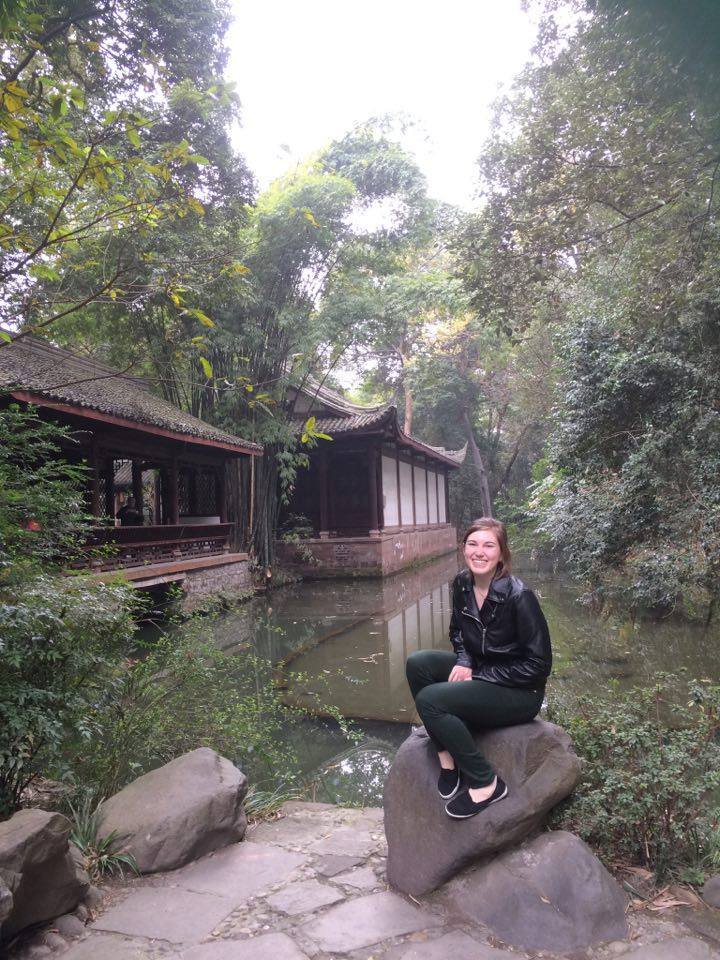

Lia Jundt
Software Engineer

Lia Jundt was born at Stanford Hospital in 1995 and grew up in the heart of Silicon Valley. She graduated from Palo Alto High School and continued her education at Hamilton College in upstate New York. At Hamilton, she began studying computer science and Chinese. Over her years studying and working as a teaching assistant, she gained recognition and her Senior year became the Rusty Smith Head Teaching Assistant of the Computer Science Department. For two summers she worked at Qylur Intelligent Systems as a Software Engineer Intern, producing applications used internationally.
In her free time, Lia enjoys Chinese martial arts, singing, and watching stand up comedy.